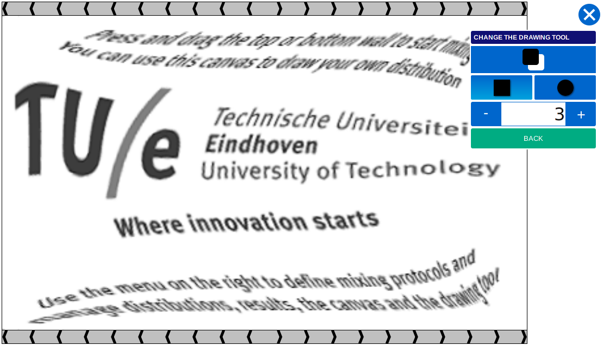

This page is the frontpage of the Fingerpaint project. The project started as a SEP, a Software Engineering Project, at the Eindhoven University of Technology. The SEP has ended right now, but the code is still availble and development can continue.
The Fingerpaint application is a HTML5 application that enables a user to quickly and easily define the initial distribution of liquids in a mixer. After that, the mixing can be simulated. Below is a screenshot of the application in action.
On this web page, you can also view the contents of the master library and the archive library.